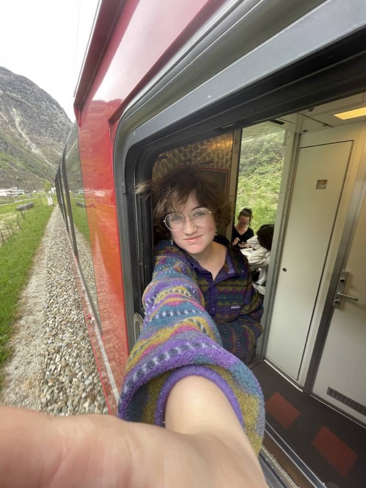

About Me
My favourite meal is a classic Canadian breakfast of over easy eggs, rye toast, sausage, bacon, baked beans, and maybe pancakes if I’m really hungry. I also like Shepard’s pie and my mom’s curry chicken. Apart from food some other things I like are drawing, rock climbing, programming, reading, and crochet.
I went to Concordia for computer science and did a year and a half in the program. I enjoyed programming for fun but realised I’d rather keep it as a hobby, not a career. Although, I didn't take any web classes while I was there. I haven’t programmed anything since quitting school, but I’m looking forward to getting back into it!
"If you look at what you have in life, you'll always have more. If you look at what you don't have in life, you'll never have enough."
-Oprah Winfrey
My Skills
- Being cool
- Photography
- Drawing
Graphic Design Courses
- Typography
- Web Design
- Graphic Design
- Concept Sketching
- Computer Graphics
- Communications for Graphic Design